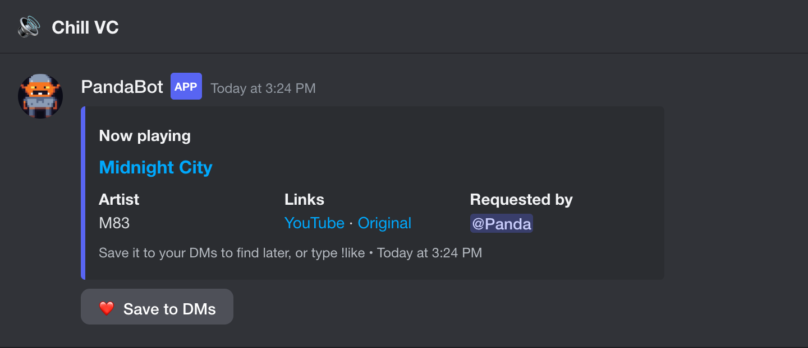
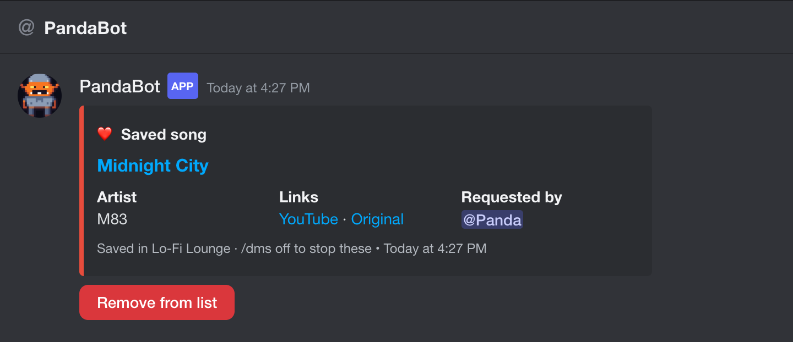

PandaBot
A companion for Jockie Music. Never lose a song you heard in voice chat again.
🎧 Now-playing cards
Every song gets a card in the voice channel's chat: title, artist, who requested it, and a YouTube link.
❤️ One-tap saving
Tap the heart, press Save to DMs, type !like or use /save. Each save is DMed to you, so your DMs become your playlist.
📊 Stats
p!stats, p!top, p!dj, p!match @friend, and p!heard for "what was that song?"
🔌 Other music bots
Jockie works out of the box. Add others with /musicbot add.


Getting started
- Add PandaBot to a server where Jockie Music plays (you need Manage Server).
- Play a song with Jockie as usual. PandaBot posts a card in that voice channel's chat. There's nothing to set up: every Jockie instance is picked up automatically.
- Tap ❤️ under the song (or type
!like) to save it to your DMs. - Optional: run
p!backfill 10000to pull in the server's past songs, then tryp!top.
No card showing up? PandaBot needs to see the channels where people type m!p and where Jockie posts. /setupcheck lists any it can't. /musicbot add is only for music bots other than Jockie.
PandaBot never joins voice and doesn't play music. It reads what your music bot posts. p!help lists everything.